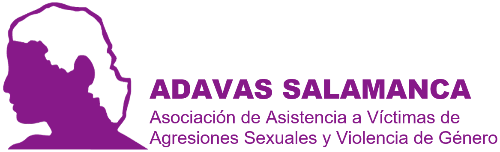

🎵 Interpretación Musical y Prevención de Violencia de Género
Proyecto de Aprendizaje-Servicio • Universidad de Salamanca • Curso 2025-26
🎯OBJETIVO PRINCIPAL
Desarrollar estrategias para abordar desigualdades de género en interpretación musical y prevenir violencia de género en conservatorios
📚 ACTIVIDADES POR ASIGNATURA
🎼Música del Siglo XX
Coordinadora: Isabel Jiménez
- Análisis histórico: Presencia de mujeres en diferentes instrumentos
- Estudio de caso: Comparativa instrumentos masculinizados vs feminizados
- Intervención: Materiales sobre compositoras/intérpretes relevantes
- Estudiantes: 2 participantes
🎭Antropología y Folklore
Coordinadora: Mª Jesús Pena
- Investigación etnográfica: Entrevistas multigeneracionales
- Análisis comparativo: Distribución por género en instrumentos tradicionales
- Documentación: Archivo de experiencias de discriminación
- Estudiantes: 3 participantes
🎨Música e Imagen
Coordinadora: Judith Helvia García
- Corpus iconográfico: Representaciones visuales por género
- Análisis visual: Identificación de estereotipos en imágenes
- Exposición: Evolución de representaciones de género
- Estudiantes: 3 participantes
📺Música y Medios
Coordinadora: María Palacios
- Monitoreo mediático: Análisis representación en medios
- Análisis discursivo: Lenguaje según género del intérprete
- Guía de buenas prácticas: Para comunicadores especializados
- Estudiantes: 2 participantes
💬 DEBATES FORMATIVOS
⚖️Debate 1: Relaciones de Poder
Tema: Enseñanza musical individualizada
- Dinámicas de poder en el aula
- Límites interpersonales
- Respeto en el proceso enseñanza-aprendizaje
- Dirigido a: Profesorado y estudiantes
🎪Debate 2: Estereotipos de Género
Tema: Interpretación musical
- Construcción histórica de estereotipos
- Impacto en trayectorias formativas
- Estrategias para la diversificación
- Dirigido a: Orientadores, profesorado, familias
🛡️Debate 3: Protocolos de Actuación
Tema: Acoso y discriminación
- Marco normativo aplicable
- Canales de denuncia
- Acompañamiento a víctimas
- Dirigido a: Equipos directivos y representantes
🏠Debate 4: Espacios Seguros
Tema: Formación musical
- Características de espacios seguros
- Estrategias preventivas
- Relaciones equitativas
- Dirigido a: Toda la comunidad educativa
📅 CRONOGRAMA
🚀 FASE 1: PLANIFICACIÓN
Octubre - Noviembre 2025
- Constitución comité tripartito
- Formación metodológica
- Diseño herramientas
🔬 FASE 2: INVESTIGACIÓN
Diciembre 2025 - Febrero 2026
- Debates formativos 1 y 2
- Recopilación de datos
- Seminarios conjuntos
📝 FASE 3: PRODUCCIÓN
Marzo - Abril 2026
- Debates formativos 3 y 4
- Elaboración materiales
- Implementación piloto
📢 FASE 4: DIFUSIÓN
Mayo - Junio 2026
- Jornadas de presentación
- Compilación materiales
- Informe final
🤝COORDINACIÓN INSTITUCIONAL
Comité Tripartito: Universidad de Salamanca • ADAVAS • Conservatorio Superior de Música (COSCYL)


Proyecto de Aprendizaje y Servicio, Universidad de Salamanca, Número 25-26/33. PÁGINA CREADA CON CLAUDE CODE